群管理
群主和管理员在群管理窗口里管理成员、审批加群申请、设置禁言、发布群公告，并修改群资料与群权限。本章逐页介绍群管理窗口的用法。
- 适用：群主、管理员
- 「群机器人」「危险区域」两页：仅群主
打开群管理
有两个入口，都只对群主和管理员显示：
- 群聊窗口头部右侧的齿轮按钮（群管理）；
- 主面板群组页签里，在群上点右键选 群管理。
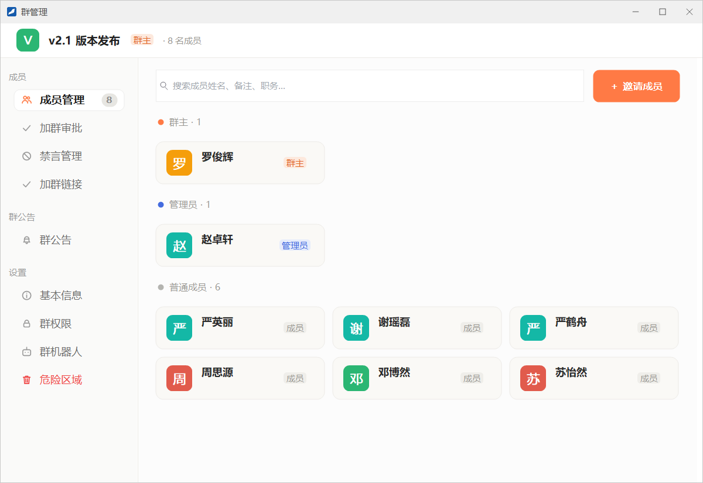
左侧导航分为三组，不同角色看到的页面不同：
| 分组 | 页面 | 群主 | 管理员 |
|---|---|---|---|
| 成员 | 成员管理 | 可用 | 可用 |
| 加群审批 | 可用 | 可用 | |
| 禁言管理 | 可用 | 可用 | |
| 加群链接 | 可用 | 可用 | |
| 群公告 | 群公告 | 可用 | 可用 |
| 设置 | 基本信息 | 可用 | 可用 |
| 群权限 | 可用 | 可用 | |
| 群机器人 | 可用（企业开启机器人功能时） | 不显示 | |
| 危险区域 | 可用 | 不显示 |
成员管理
成员管理页按 群主、管理员、普通成员 分组显示全部成员卡片，导航上的数字是成员数。在顶部的搜索框里可以按姓名、备注、职务查找成员。
邀请成员
- 点右上角的 ＋ 邀请成员，打开「邀请成员入群」窗口。
- 在通讯录里勾选要邀请的同事。
- 在 入群后可查看的聊天记录 里选择：全部聊天记录（默认）、最近 N 条（在框里填条数，默认 100），或 不同步，只能看到入群之后的消息。
- 点 邀请入群。
成员卡片的右键菜单
在成员卡片上点右键，菜单会按你和对方的角色列出可以执行的操作：
| 菜单项 | 说明 |
|---|---|
| 发消息 | 打开与对方的单聊窗口 |
| 查看资料 | 打开对方的资料窗口 |
| 设为管理员 / 撤销管理员 | 只有群主能设置或撤销管理员 |
| 禁言 / 解除禁言 | 点「禁言」后再选时长：禁言 10 分钟、禁言 1 小时、禁言 12 小时、禁言 1 天 或 永久禁言 |
| 移出本群 | 把对方移出群聊，这是菜单里唯一不可撤销的操作 |
| 代为确认入群必读 | 对方还没确认入群必读时才出现，替对方确认后他就能发言，见下文「入群必读」 |
加群审批
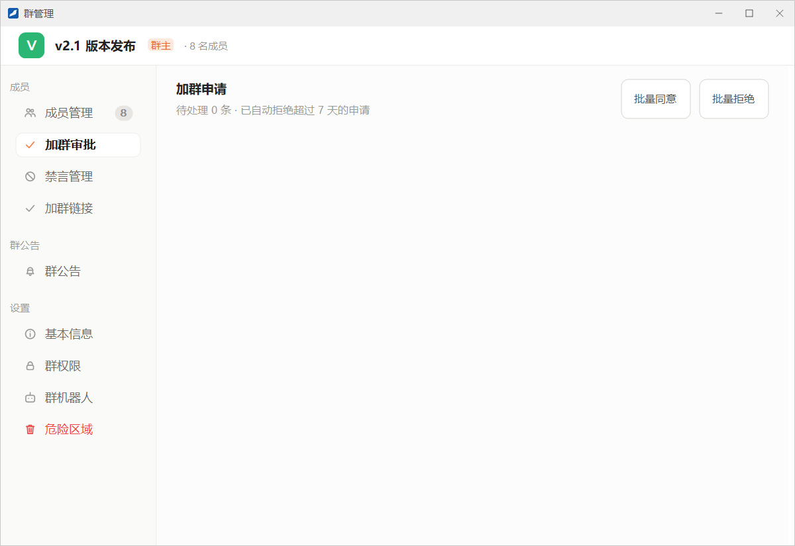
群的加群方式设为「需要验证消息」时，别人申请加入会出现在这里，导航上的数字是待处理的申请数。
- 每条申请显示申请人、验证消息和来源。来源有 好友邀请、扫码加群、群搜索 和 由某某推荐，通过加群链接提交的申请显示为「扫码加群」。
- 逐条点 同意 或 拒绝，或者用右上角的 批量同意、批量拒绝 一次处理全部。
- 超过 7 天没人处理的申请会被自动拒绝。
- 如果另一位管理员已经处理了某条申请，你再处理时会提示「该申请已被其他管理员处理。」
禁言管理
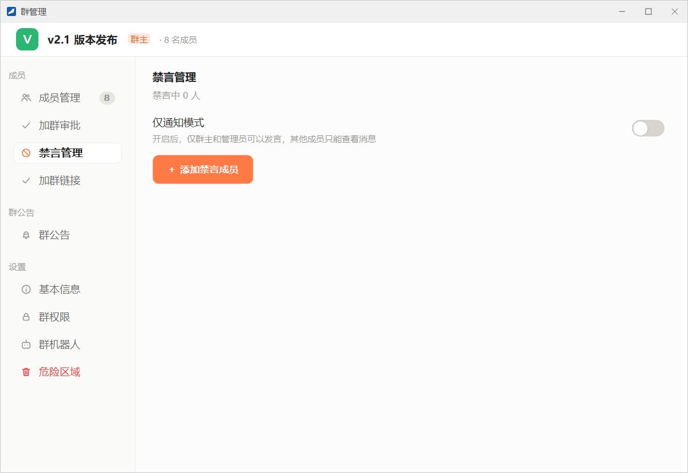
- 仅通知模式：打开后，只有群主和管理员可以发言，其他成员只能查看消息，适合发布通知类的群。
- ＋ 添加禁言成员：在「选择要禁言的成员」窗口里勾选一个或多个成员，点 禁言。从这里添加的成员一律按永久禁言处理，之后可以在列表里逐个调整。
- 禁言中的成员逐行列出，并显示剩余时间（如「剩余 3 小时」或「永久禁言」）。点 延长 重新选择禁言时长，点 解除 立即恢复发言。
也可以在成员管理页的成员卡片上点右键选 禁言，直接选择时长。被禁言的成员不能在群里发言，也不能参与接龙。
加群链接
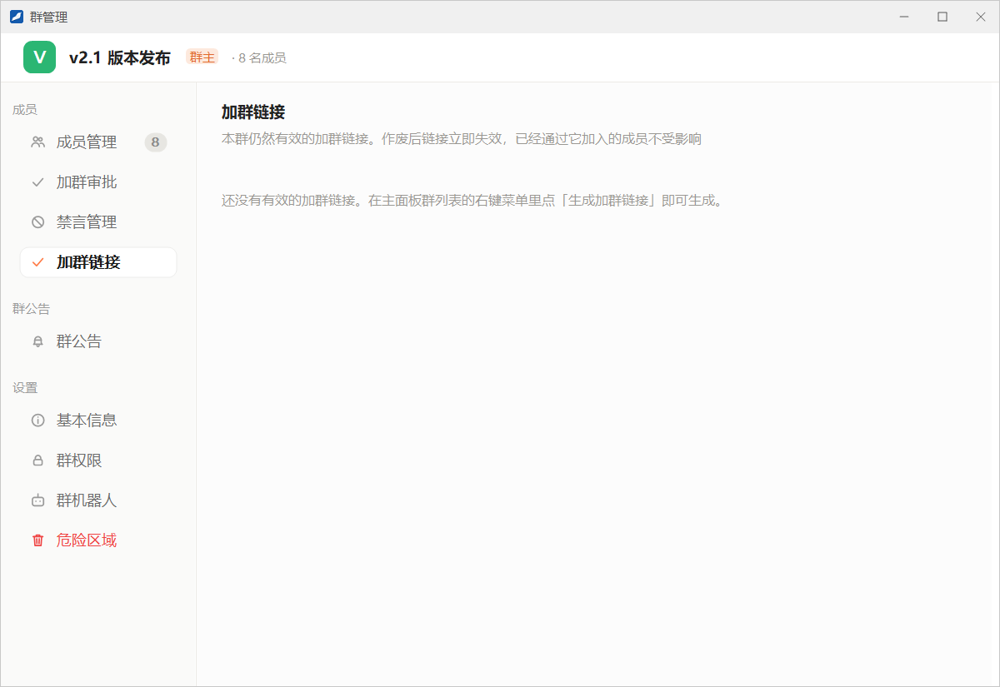
这里列出本群所有仍然有效的加群链接，不论是谁生成的，每条都可以 作废。作废后链接立即失效，已经通过它加入的成员不受影响。生成链接的方法见「群聊 → 加群链接」。
群公告
群公告用来发布全群都需要知道的事情。发布后所有成员都会收到弹窗通知，之后还可以在群聊窗口的「公告」页签里再次查看。
发布公告
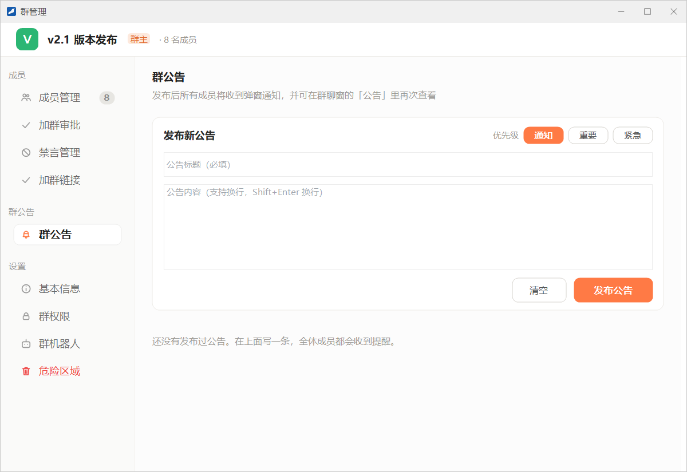
- 在左侧导航点 群公告。
- 在 优先级 里选择 通知、重要 或 紧急，默认是「通知」。
- 填写 公告标题（必填）。
- 在下面的框里填写公告内容，内容可以分多行。
- 点 发布公告。想重新写时点 清空。
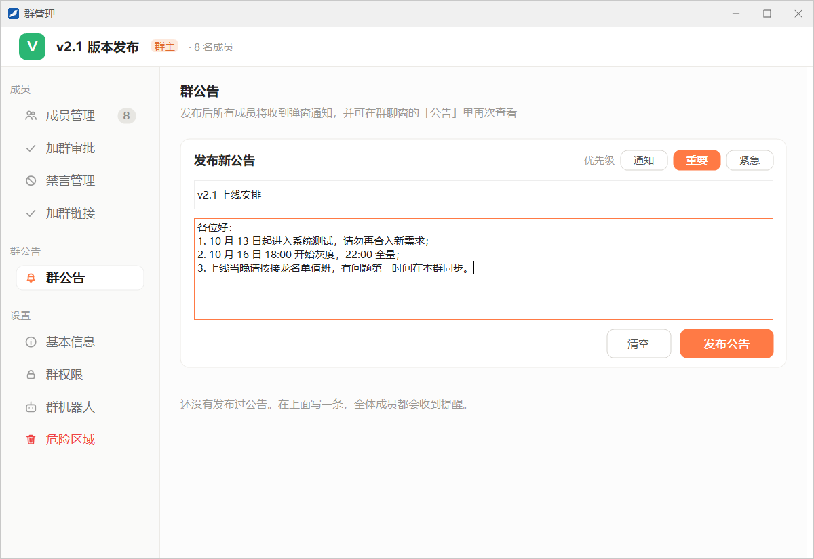
成员收到的通知
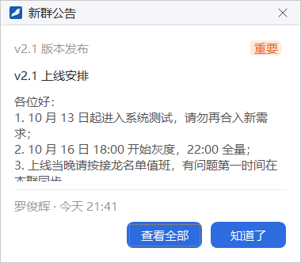
公告发布后，全体成员各弹出一次「新群公告」窗口，显示群名、优先级、标题、正文以及发布人和时间：
- 知道了：关闭弹窗。
- 查看全部：打开这个群的群聊窗口，并切换到右侧的「公告」页签，在那里可以翻看本群的全部公告。
同时，群里会出现一张公告卡片，点卡片上的 查看 可以阅读全文。
管理历史公告
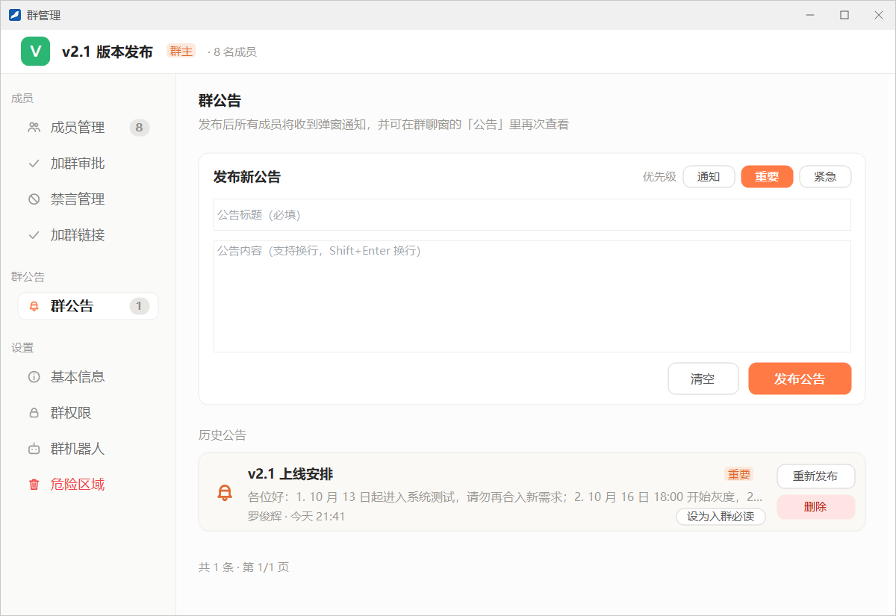
发布过的公告按时间列在 历史公告 中，显示标题、优先级、内容摘要、发布人和时间，公告多时分页显示。每条公告右侧有这些按钮：
- 重新发布：以当前时间把这条公告再发布一次，全体成员会再收到一次公告提醒。历史公告里会多出一条新的记录，原来那条保留。
- 删除：这条公告会从群公告里彻底消失，成员与管理员都不再看得到，且无法恢复。
- 设为入群必读 / 取消入群必读：见下文。
入群必读
把一条公告设为入群必读后，之后加入的成员要先阅读这条公告并点 我已阅读 才能在群里发言；已经在群里的成员不受影响。
- 还没确认的新成员打开群聊窗口时，输入区会提示「请先阅读入群必读公告并点「我已阅读」后再发言，点此阅读」，点它即可打开公告。
- 群主和管理员可以在成员卡片的右键菜单里点 代为确认入群必读，替某位成员确认。
- 取消入群必读后，还没有确认的新成员也可以直接发言。
基本信息
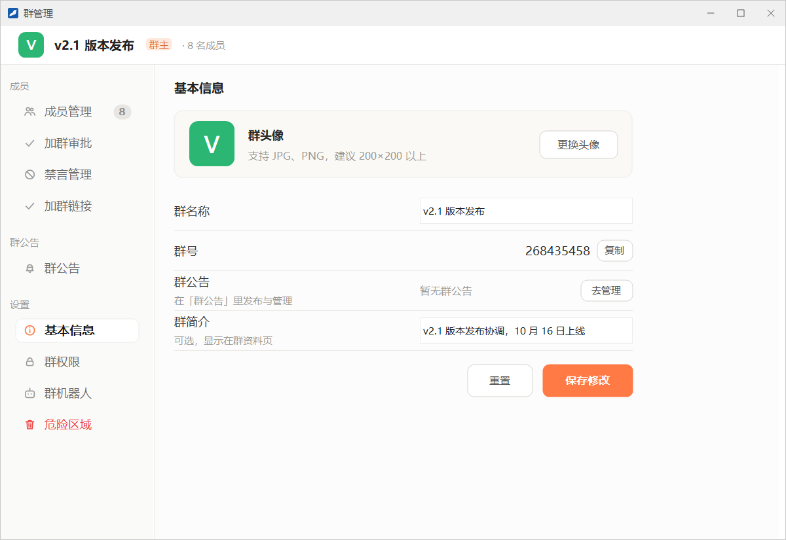
| 项目 | 说明 |
|---|---|
| 群头像 | 点 更换头像 选择图片，支持 JPG、PNG，建议 200×200 以上 |
| 群名称 | 修改群名。设定过群名后，群名不再随成员变化自动生成 |
| 群号 | 点 复制 把群号复制到剪贴板 |
| 群公告 | 显示最新一条公告的标题，点 去管理 跳到「群公告」页 |
| 群简介 | 可选，显示在群资料窗口里，以及群聊窗口头部的左侧 |
改完后点 保存修改；点 重置 放弃还没保存的修改。
群权限
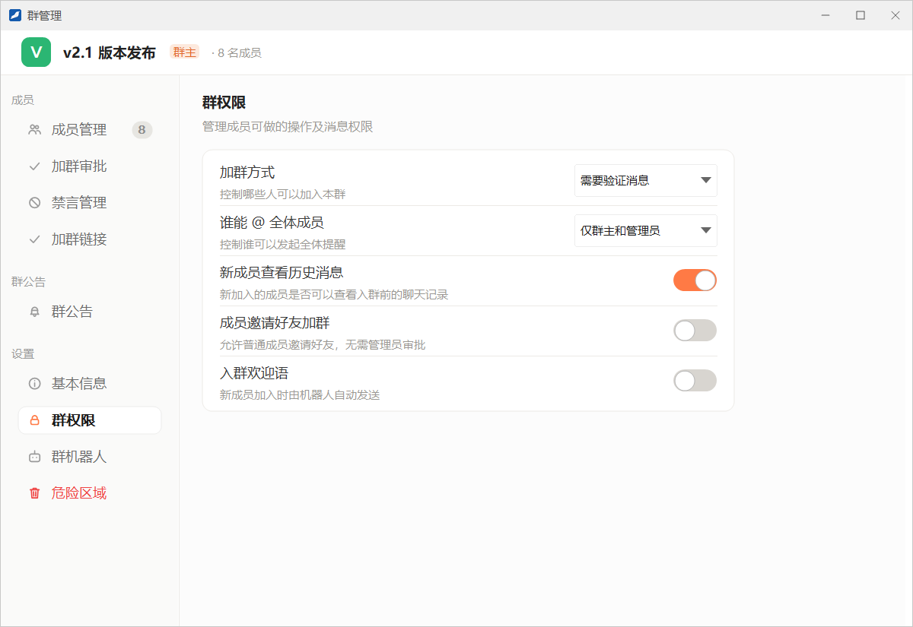
这一页的设置在切换开关或选择下拉项后立即生效，不需要另外保存。
| 设置项 | 可选值与说明 |
|---|---|
| 加群方式 | 允许任何人加入：不需要审批，例如点加群链接后直接入群；需要验证消息：要经群主或管理员在「加群审批」里同意；禁止任何人加入：不能申请，也不能通过加群链接加入 |
| 谁能 @ 全体成员 | 仅群主和管理员，或 所有人。设为「所有人」后，普通成员在 @ 候选列表里也能选「所有人」 |
| 新成员查看历史消息 | 新加入的成员能否查看入群前的聊天记录 |
| 成员邀请好友加群 | 允许普通成员邀请好友，无需管理员审批 |
| 入群欢迎语 | 新成员加入时由机器人自动发送欢迎消息 |
群机器人
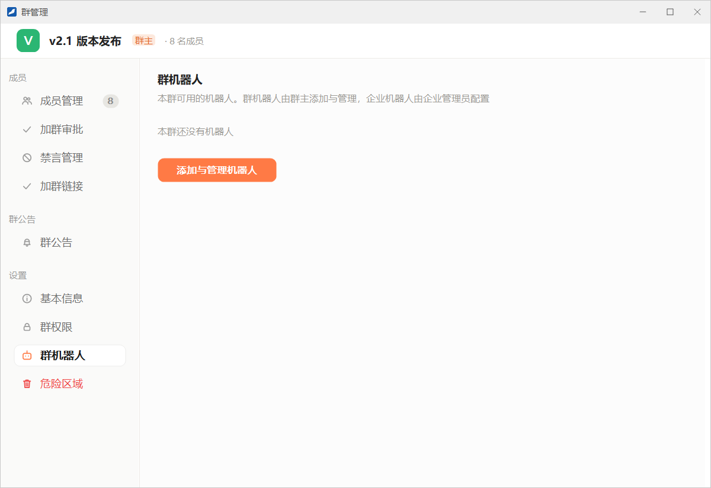
这一页只有群主能看到，而且需要企业开启机器人功能。页面列出本群可用的机器人：群机器人由群主添加与管理，企业机器人由企业管理员配置。点 添加与管理机器人 打开群机器人管理窗口，具体用法见「机器人 → 创建与使用群机器人」。
危险区域
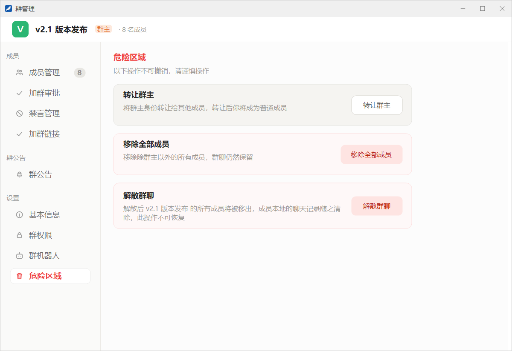
| 操作 | 说明 |
|---|---|
| 转让群主 | 点 转让群主，在弹出的窗口里选择新群主并点 转让。转让后你将成为普通成员 |
| 移除全部成员 | 移除群主以外的所有成员，群聊仍然保留 |
| 解散群聊 | 所有成员都会被移出，成员本地的聊天记录随之清除，此操作不可恢复 |
只想自己离开而不解散群时，可以在群列表的右键菜单里点 退出群聊，按提示先转让群主再退出，见「群聊 → 群列表的右键菜单」。